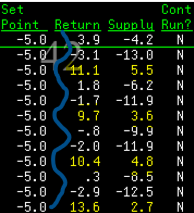
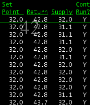

Issue: My Reefer unit seems to cut on and off alot. It also goes out of temp very quickly.
Resolution: Your reefer is operating as intended. No need for service. You have a product with a lot of packaging. I can see the temp getting in range, the reefer shuts off, and then a "see saw" pattern where it heats up quickly again. This is a sign of heavy packaging. or a sign that the product is not responding to the supply temp. This is a good example below. The blue line shows the trend of the heat and cool cycle and in yellow, you can see the temp spikes right before the reefer starts back up.

Issue: My reefer has been cooling for hours but the temp will not go down.
Resolution: Your reefer is operating just as it should. It is most likely hot product that was loaded into the trailer. When you have produce, eggs, or anything with a high water content, even meat, it will take a lot longer to get into temp. There is nothing we can do but wait. Our trailers at Prime do not cool product down, they keep cold product cold. Side note: We do not want to adjust the temps to get it to cool faster. We can do damage to the product if we send air that is TOO cold back to the product and not get the result we are looking for
